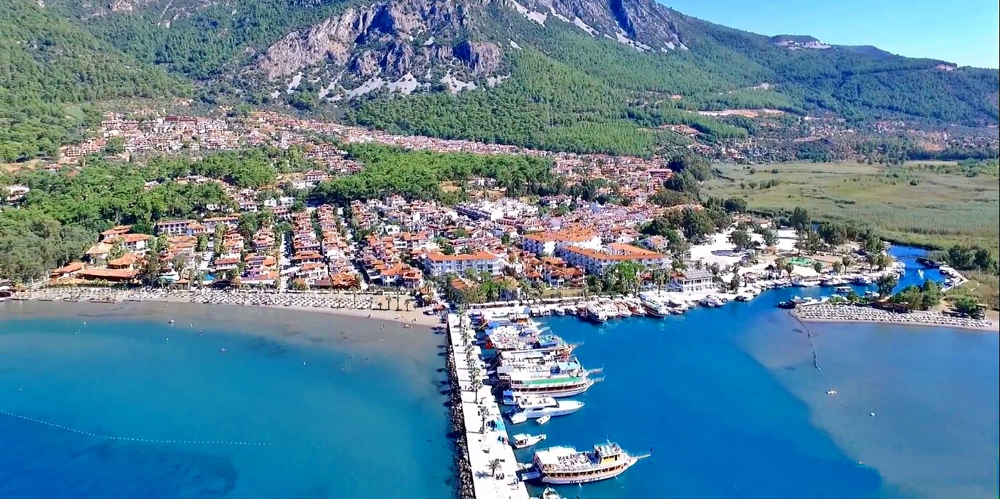

Ula,Muğla
Ula, Muğla'nın 13 ilçesinden birisidir. 1954 yılında ilçe olmuştur. Muğla’nın güneyinde bulunan Ula'nın doğusunda Köyceğiz, batısında Gökova Körfezi, kuzeyinde Muğla merkez ilçesi, güneyinde Marmaris ilçesi vardır.
ULA GEZİLECEK YERLER
Akyaka
 Bu küçük, sakin kasaba; hayatın keşmekeşinden sıkılan ve durup dinlenmek isteyenler için bir kaçış yeridir. Denizi, güneşi, tarihi, doğasıyla insana cennette hissi uyandıran Akyaka, bir tarafında Azmak Deresi, diğer yanında Gökova Körfezi ile belki de Türkiye’nin en güzel yerlerinden biridir. Antik çağlardan beri üzerinde yerleşim olduğuna inanılan bu topraklarda Akyaka, yakın yıllara kadar gözlerden uzak küçük bir balıkçı köyü olarak varola gelmiştir. Akyaka’nın “keşfi” ise 1970’lere dayanır. O yıllarda çok küçük çaplı da olsa, bir turizm faaliyeti başlamıştır. Civar il ve ilçelerden gelen ziyaretçiler ile büyük şehirlerden kaçanlar, Akyaka’nın bakir doğasına, yazın bile hiç kesilmeyen tatlı meltemine akın etmeye ve yavaş yavaş Akyaka’da yazlık evler, turistik tesisler inşa etmeye başlamışlardır. Ve sonunda, 1980’lerdeki turizm patlaması ile birlikte Akyaka da bir patlama yaşamış, bugünkü “turistik belde” görünümünü almıştır.Ula Göleti
 Muğla ilinin Ula ilçesi sınırları içerisinde yer alan Ula Göleti; oldukça ideal bir mesire alanı olarak dikkat çekmektedir.
Doğal güzellikleriyle dikkat çeken bu alanda çok sayıda çam ağacı da yer almaktadır.
Aynı zamanda da üç farklı restoranda da bu doğal güzelliğin keyfini çıkarmak mümkündür.
Tatil yapmak ve iyi bir yemek yemek isteyenler için bu su kaynağının kenarı oldukça etkin bir yer tutuyor.
Geniş bir alan üzerine kurulu olan Ula Göleti, herkesin huzurlu bir zaman içinde olmasını da sağlıyor.
Bu yüzden de Muğlalı ziyaretçilerin uğrak noktasıdır.
Aynı zamanda da yöresel yemekleri tatmak isteyen ziyaretçilerin de ilgisini çekmektedir.
Ula Göleti çam ormanları ve makisiyle oldukça yeşil bir alan olarak ifade edilmektedir.
Aynı zamanda da yapay bir su kaynağı olmasına karşın ziyaretçilerin ilgi gösterdiği bir alandır.
Muğla Büyükşehir Belediyesi tarafından imar edilen bu bölgede iskele, peyzaj ve piknik alanları bulunmaktadır.
Genel olarak Muğla halkı tarafından fazlasıyla ilgi çeken bir konumdadır.
Muğla ilinin Ula ilçesi sınırları içerisinde yer alan Ula Göleti; oldukça ideal bir mesire alanı olarak dikkat çekmektedir.
Doğal güzellikleriyle dikkat çeken bu alanda çok sayıda çam ağacı da yer almaktadır.
Aynı zamanda da üç farklı restoranda da bu doğal güzelliğin keyfini çıkarmak mümkündür.
Tatil yapmak ve iyi bir yemek yemek isteyenler için bu su kaynağının kenarı oldukça etkin bir yer tutuyor.
Geniş bir alan üzerine kurulu olan Ula Göleti, herkesin huzurlu bir zaman içinde olmasını da sağlıyor.
Bu yüzden de Muğlalı ziyaretçilerin uğrak noktasıdır.
Aynı zamanda da yöresel yemekleri tatmak isteyen ziyaretçilerin de ilgisini çekmektedir.
Ula Göleti çam ormanları ve makisiyle oldukça yeşil bir alan olarak ifade edilmektedir.
Aynı zamanda da yapay bir su kaynağı olmasına karşın ziyaretçilerin ilgi gösterdiği bir alandır.
Muğla Büyükşehir Belediyesi tarafından imar edilen bu bölgede iskele, peyzaj ve piknik alanları bulunmaktadır.
Genel olarak Muğla halkı tarafından fazlasıyla ilgi çeken bir konumdadır.
Akbük Koyu
 Akbük Koyu, Ula’ya yaklaşık 25 kilometre uzaklıktadır.
Oldukça eşsiz bir manzaraya sahip olan koyun çevresi yeşil ormanlarla kaplıdır.
Ula ilçe merkezinden Akbük Koyu’na ulaşımlar, özel araçla Gökova yolu üzerinden yapılabilmektedir.
Aynı zamanda Akbük Koyu’na taksi veya ilçe otogarından saat başı hareket eden Akbük minibüsleriyle de gidilebilmektedir.
Kıran Dağı’nın eteklerinde konumlanan Akbük Koyu, 1. derece sit alanı olarak korunmaktadır.
Koy çevresinde sıralanan tekneler aracılığı ile günlük tekne turlarına katılabileceğiniz bölge, sit alanı olarak korunduğu için üzerinde herhangi bir yapılaşmaya izin verilmemektedir.
Masmavi denizin tadını çıkarabileceğiniz koyda, gün boyu keyifli vakit geçirebilir, yanınızda götürebileceğiniz piknik malzemeleriyle birlikte gezinizi renklendirebilirsiniz.
Akbük Koyu, Ula’ya yaklaşık 25 kilometre uzaklıktadır.
Oldukça eşsiz bir manzaraya sahip olan koyun çevresi yeşil ormanlarla kaplıdır.
Ula ilçe merkezinden Akbük Koyu’na ulaşımlar, özel araçla Gökova yolu üzerinden yapılabilmektedir.
Aynı zamanda Akbük Koyu’na taksi veya ilçe otogarından saat başı hareket eden Akbük minibüsleriyle de gidilebilmektedir.
Kıran Dağı’nın eteklerinde konumlanan Akbük Koyu, 1. derece sit alanı olarak korunmaktadır.
Koy çevresinde sıralanan tekneler aracılığı ile günlük tekne turlarına katılabileceğiniz bölge, sit alanı olarak korunduğu için üzerinde herhangi bir yapılaşmaya izin verilmemektedir.
Masmavi denizin tadını çıkarabileceğiniz koyda, gün boyu keyifli vakit geçirebilir, yanınızda götürebileceğiniz piknik malzemeleriyle birlikte gezinizi renklendirebilirsiniz.